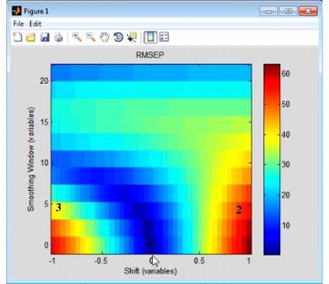
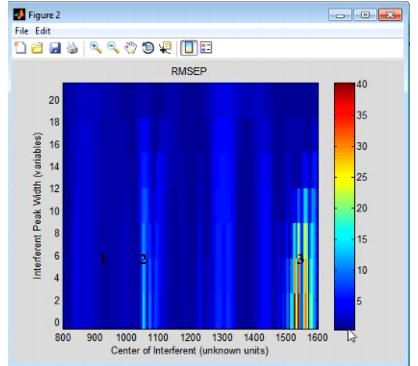
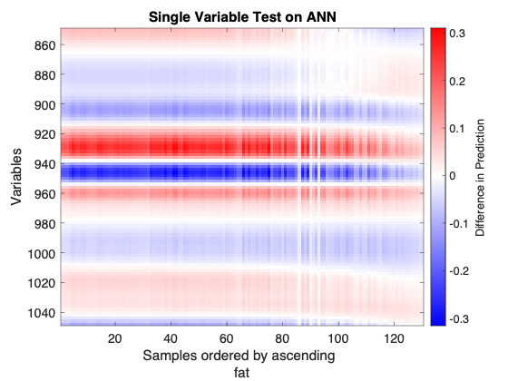

Table of Contents | Previous | Next
Model Robustness Tool
You use the Model Robustness tool to measure the sensitivity of a regression model to artifacts in new spectroscopic measurements. To open the Model Robustness tool, on the Analysis window, click Tools > Model Robustness, and then click Shifts, Interferences, or Single Variable Test.
Shifts
The Shifts option measures the sensitivity of a regression model to shifts in x-axis data that are caused by instrument instability-that is, if you have an instrument that is not particularly stable or reproducible over time, what is the impact on predictions using the given model? The Shifts plot is a three-dimensional plot that details the RMSEP (Root Mean Squared Error of Prediction) for the model as a function of shift, where shift is described in terms of the number of variables and the Smoothing window.
- Example of a Shifts plot
- 
Consider the figure above, which shows the model robustness for a regression model with an RMSEC (Root Mean Squared Error of Calibration) of approximately 0.5. As shown in this figure:
- 1 - Without shift and without smoothing of the variables, the RMSEP indicates that you have test data that is identical to your calibration data and you have performance that is on par for the RMSEC of the model
|
- 2 - Shifting a spectrum over by simply one variable increases the RMSEP for the model by almost twelve orders of magnitude, from 0.5 to almost 60.
|
- 3 - With a combination of shifting and smoothing, the impact on the model is lessened somewhat.
|
Interferences
The Interferences option measures the sensitivity of a regression model to the location and width of a new peak in test data-that is, if you have a chemical entity that is present in the test data but that was not reflected in the calibration data, what is the impact on predictions using the given model? The Interferences plot is a three-dimensional plot that details the RMSEP (Root Mean Squared Error of Prediction) for the model as a function of a new peak, where the peak is described in terms of its width and location.
- Example of an Interferences plot
- 
Consider the figure above, which shows the model robustness for a regression model with an RMSEC (Root Mean Squared Error of Calibration) of approximately 0.5. As shown in this figure, the RMSEP for the model can be impacted in one of three ways:
- 1 - An interferant area where there is virtually no impact on the RMSEP for the model, no matter how wide the interfering peak is.
|
- 2 - An interferant area where there is a slight impact on the RMSEP for the model, but the impact is lessened as the width of the peak increases.
|
- 3 - An interference area where there is a significant impact on the RMSEP for the model, but the impact is lessened as the width of the peak increases.
|
Single Variable Test
The Single Variable Test observes the sensitivity of each variable once samples are perturbed and applied to the model. For each variable at a time, the standard deviation of that variable divided by 100 is added to all samples in the dataset. This perturbed dataset and the original dataset are applied to the model, and the differences between each sample's predictions are monitored. The result is an image showing the model sensitivity as a function of the variables and the predicted values.
- Example of an Single Variable Test plot
- 
Consider the above figure. A neural network was calibrated on NIR spectra of meat samples to predict the fat content of those samples. It shows the regions that are the most sensitive, and regions that don't drive the prediction. This dataset is known to have nonlinearities, this visualization brings insight into those nonlinearities and how the ANN learned them:
- 1 - The model is less sensitive to samples with higher fat content.
|
- 2 - The generally horizontal zero lines (where the plot is white) don’t go straight through. So transition from negative to positive sensitivity with wavelength is different for different fat content.
|
- 3 - Some regions change from mild positive to mild negative sensitivity.
|